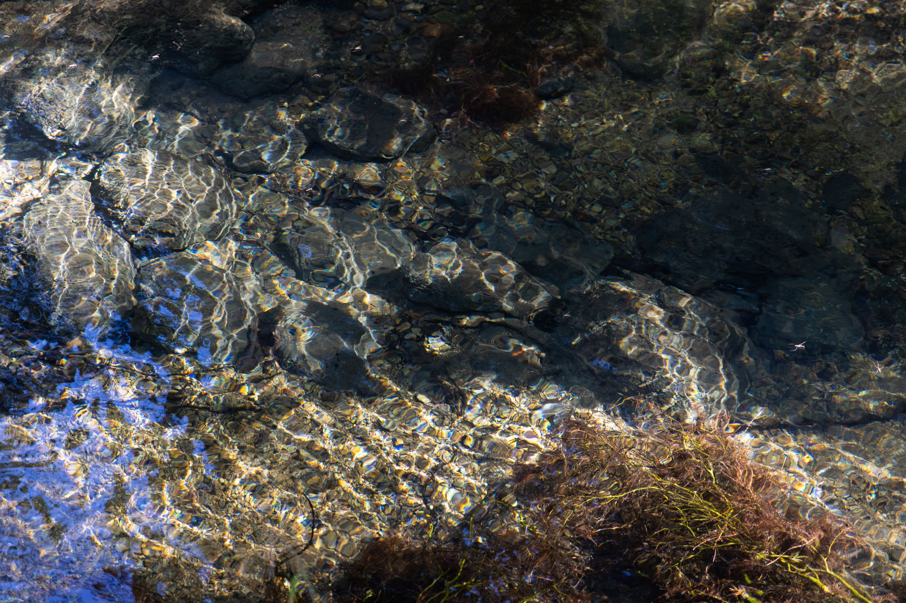

Se obtiene
El agua se obtiene de ríos, presas, manantiales o pozos.
Un recurso que compartimos
Conoce el camino que recorre el agua todos los días.
De la naturaleza a nuestros hogares
Usamos agua para bañarnos, cocinar, lavar y beber. Pero, ¿alguna vez te has preguntado de dónde viene y a dónde va después de usarla?
Comenzar el recorrido
Una ruta que no siempre vemos
El agua pasa por varias etapas antes y después de que la usamos. Conocerlas ayuda a entender por qué debemos cuidarla.
El agua se obtiene de ríos, presas, manantiales o pozos.
Se limpia y viaja por tuberías hasta las casas y comunidades.
Después de usarla, el agua residual es transportada por el drenaje.
En una planta se limpia antes de reutilizarla o devolverla al ambiente.